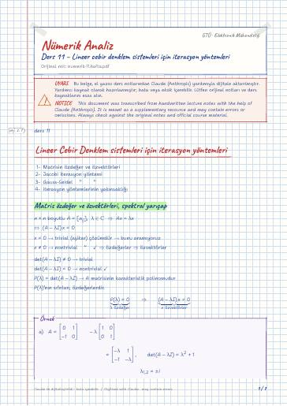

Nümerik Analiz · Dijital ders notu
Ders 11 – Lineer cebir denklem sistemleri için iterasyon yöntemleri
- Ders
- Nümerik Analiz (MAT214)
- Dönem
- 3. Dönem · 2022–2023 Güz
- Biçim
- PDF · 7 sayfa · 0,1 MB · el yazısı görünümlü LaTeX
- Orijinal not
- numerik-11.hafta.pdf

The digital notes were created from the handwritten notes with the help of Claude (Anthropic); they are meant as a supplementary resource and may contain errors. Always rely on the original notes and the official course materials.
Bu notta neler var?
- Lineer Cebir Denklem sistemleri için iterasyon yöntemleri
- Matris özdeğer ve özvektörleri, spektral yarıçap
- Yakınsak Matrisler
- 2- Jacobi iterasyon yöntemi
- 3. Gauss-Seidel iterasyon yöntemi
Notun metni
Düz metin olarak göster (formüller ve çizimler yoktur)
Lineer Cebir Denklem sistemleri için iterasyon yöntemleri
Matrisin özdeğer ve özvektörleri
Jacobi iterasyon yöntemi
iterasyon yöntemlerinin yakınsaklığı
Matris özdeğer ve özvektörleri, spektral yarıçap
x=0 → trivial (aşikar) çözümdür → bunu aramıyoruz
x≠ 0 → nontrivial '' ⇒ özdeğerler ⇒ özvektörler
P(λ)=(A-λ I) → A matrisinin karakteristik polinomudur
P(λ) 'nın sıfırları, özdeğerlerdir.
Eğer her i,j=1,…,n matrisi yakınsak matristir.
A matrisinin yakınsak olması için, onun spektral yarıçapının r(A)<1 olması ile gerek ve yeter
koşul sağlanmış olur.
2- Jacobi iterasyon yöntemi
denklemlerin çözümü için yaklaşımı (iteratif yöntem)
denklem sistemi için x^(0)=0 olacak biçimde Jacobi iterasyonu uygulayıp 2 iterasyonu bulunuz.
3. Gauss-Seidel iterasyon yöntemi
belirlenmiş x^(k) , k=0,1,… dizisinin x=Tx+c denkleminin çözümüne yakınsaması için
gerek ve yeter koşul r(T)<1 eşitsizliğinin sağlanmalıdır.